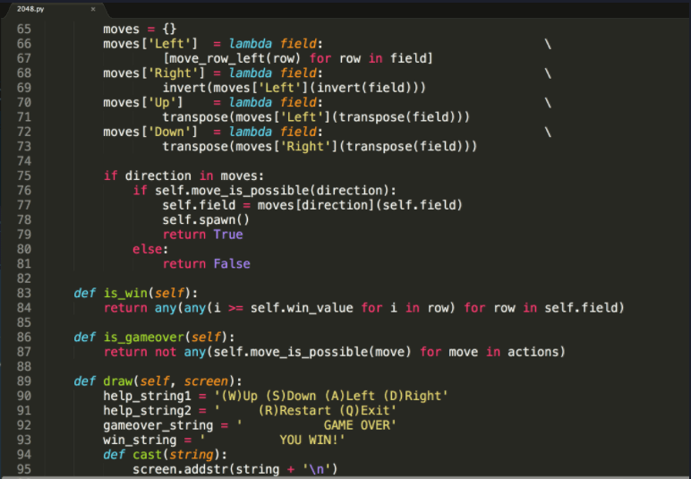
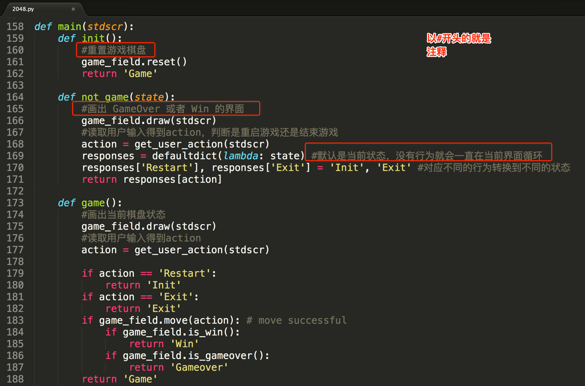
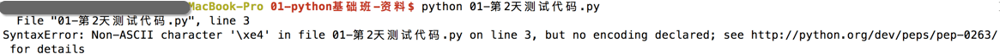

注释的引入
<1> 看以下程序示例（未使用注释）

<2> 看以下程序示例（使用注释）

<3> 小总结（注释的作用）
- 通过用自己熟悉的语言，在程序中对某些代码进行标注说明，这就是注释的作用，能够大大增强程序的可读性
注释的分类
<1> 单行注释
以#开头，#右边的所有东西当做说明，而不是真正要执行的程序，起辅助说明作用
# 我是注释，可以在里写一些功能说明之类的哦
print('hello world')
<2> 多行注释
'''我是多行注释，可以写很多很多行的功能说明
这就是我牛X指出
哈哈哈。。。
'''
'''
下面的代码完成 ，打印一首诗
名字叫做：春江花月夜
作者，忘了
'''
print('╔═╤═╤═╤═╤═╤═╤═╤═╤═╤═╤═╤═╤═╤═╤═╤═╤═╤═╤═╤═╗')
print('║ │ │ │ │ │ │ │ │ │ │ │ │ │ │ │ │ │ │ │ ║')
print('║ │ │ │ │ │ │ │ │ │ │ │ │ │ │ │ │ │ │ │ ║')
print('║ │春│滟│江│空│江│江│人│不│白│谁│可│玉│此│鸿│昨│江│斜│不│ ║')
print('║ │江│滟│流│里│天│畔│生│知│云│家│怜│户│时│雁│夜│水│月│知│ ║')
print('║ │潮│随│宛│流│一│何│代│江│一│今│楼│帘│相│长│闲│流│沉│乘│ ║')
print('║ │水│波│转│霜│色│人│代│月│片│夜│上│中│望│飞│潭│春│沉│月│ ║')
print('║ │连│千│绕│不│无│初│无│待│去│扁│月│卷│不│光│梦│去│藏│几│ ║')
print('║春│海│万│芳│觉│纤│见│穷│何│悠│舟│徘│不│相│不│落│欲│海│人│ ║')
print('║江│平│里│甸│飞│尘│月│已│人│悠│子│徊│去│闻│度│花│尽│雾│归│ ║')
print('║花│，│，│，│，│，│，│，│，│，│，│，│，│，│，│，│，│，│，│ ║')
print('║月│海│何│月│汀│皎│江│江│但│青│何│应│捣│愿│鱼│可│江│碣│落│ ║')
print('║夜│上│处│照│上│皎│月│月│见│枫│处│照│衣│逐│龙│怜│潭│石│月│ ║')
print('║ │明│春│花│白│空│何│年│长│浦│相│离│砧│月│潜│春│落│潇│摇│ ║')
print('║ │月│江│林│沙│中│年│年│江│上│思│人│上│华│跃│半│月│湘│情│ ║')
print('║ │共│无│皆│看│孤│初│望│送│不│明│妆│拂│流│水│不│复│无│满│ ║')
print('║ │潮│月│似│不│月│照│相│流│胜│月│镜│还│照│成│还│西│限│江│ ║')
print('║ │生│明│霰│见│轮│人│似│水│愁│楼│台│来│君│文│家│斜│路│树│ ║')
print('║ │。│。│。│。│。│？│。│。│。│？│。│。│。│。│。│。│。│。│ ║')
print('║ │ │ │ │ │ │ │ │ │ │ │ │ │ │ │ │ │ │ │ ║')
print('║ │ │ │ │ │ │ │ │ │ │ │ │ │ │ │ │ │ │ │ ║')
print('╚═╧═╧═╧═╧═╧═╧═╧═╧═╧═╧═╧═╧═╧═╧═╧═╧═╧═╧═╧═╝')
python程序中，中文支持
如果直接在程序中用到了中文，比如
print('你好')
如果直接运行输出，程序会出错：

解决的办法为：在程序的开头写入如下代码，这就是中文注释
#coding=utf-8
修改之后的程序:
#coding=utf-8
print('你好')
运行结果:
你好
注意：
在python的语法规范中推荐使用的方式：
# -*- coding:utf-8 -*-